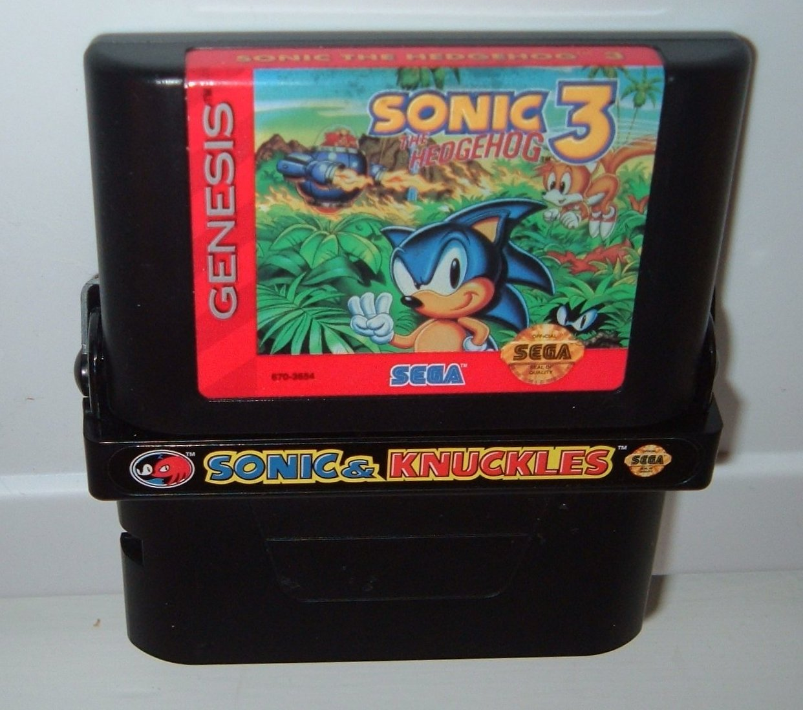

Sonic 3 is a 2D side-scrolling platformer. At the start, players can select Sonic, Tails, or both. In the latter choice, players control Sonic while Tails runs along beside him; a second player can join in at any time and control Tails separately. Sonic 3 adds the ability for Tails to fly for a short time by spinning his twin tails like a propeller; when he gets too tired, he falls. Unlike Sonic, Tails can also swim underwater.
The game takes place over six zones, each divided into two acts. Levels are populated with Robotnik's robots, called "badniks"; Sonic and Tails can defeat badniks by jumping on them or using the "spin dash" attack, which also gives the character a speed boost. The levels include obstacles and other features such as vertical loops, corkscrews, breakable walls, spikes, water that the player can drown in, and bottomless pits. There is a miniboss fight with one of Robotnik's large, powerful robots at the end of the first act of each level and a full boss fight with Robotnik at the end of the second. Reaching a new level saves the game to one of six save slots.
As with previous Sonic games, Sonic 3 uses rings, scattered throughout the levels, as a health system; when the player is attacked without rings, is crushed, falls off-screen, drowns, or exceeds the act's ten-minute limit, they lose a life and return to the most recently passed checkpoint. Dying with zero lives gives the player a game over. The levels also include power-ups in television monitors that, when hit, grant the character an extra life, temporary invincibility to most hazards, a number of rings, a shield that allows them to breathe underwater, a shield that allows them to withstand fire from enemy projectiles, or a shield that attracts nearby rings.
The game contains two types of "special stages". When the player collects at least 50 rings and passes a checkpoint, they can warp to the first type, which involves bouncing up a gumball machine-like corridor to earn power-ups by hitting a switch. Both sides of the corridor are lined with flippers, which disappear when the character bounces on them, and the switch drops when both flippers supporting it are removed. The corridor's floor contains a bounce pad, which also disappears after one use; falling afterwards causes the player to leave the stage with the most recent power-up collected.
The second type, triggered by entering giant rings found in secret passages, involves running around a 3D map and passing through all of a number of blue spheres arranged in patterns. Passing through a blue sphere turns it red, and touching a red sphere causes the player to leave the stage, unless the player has just completed a cycle around an arrangement of blue spheres, in which case all of these spheres turn to harmless rings. Removing all of the blue spheres gives the player a Chaos Emerald; if Sonic (not Tails) collects all seven, he can become Super Sonic at will, which makes him invincible to most obstacles. Failing to collect the seven Chaos Emeralds triggers a post-credits scene in which Robotnik and Knuckles taunt the player.
Sonic 3 includes a competitive mode: two players, controlling Sonic, Tails, or Knuckles the Echidna, race through one or all of five stages that do not appear in the main game. In these same stages, a single player can compete against the clock in time attacks.
Since Sonic & Knuckles and Sonic the Hedgehog 3 were initially developed as one game, their gameplay is similar: both are 2D side-scrolling platformers with similar level design, graphics, and game mechanics. However, in Sonic & Knuckles, unlike in Sonic 3, the player chooses either Sonic or Knuckles at the title screen, Miles "Tails" Prower is not available to select, and the player cannot control two characters together. There is also no multiplayer mode or save feature.
The player character moves through six levels, each divided into two acts. The first act of each level ends with a miniboss fight with one of Dr. Robotnik's robots, while the second ends with a regular boss fight with Robotnik (or EggRobo in Knuckles' campaign). Sonic and Knuckles traverse levels differently: Sonic can jump slightly higher, is faster and can use the insta-shield ability which makes him invincible for a split-second, whereas Knuckles can glide, break obstacles and climb most walls. The levels also include cutscenes that differ based on the character selected, as Sonic and Knuckles are rivals for most of the game.
The game contains two types of bonus stages accessed by passing a checkpoint with at least 20 rings. The first type has Sonic or Knuckles orbit floating, glowing spheres, jetting off each one when a button is pressed, while a fence of light approaches from the bottom and will remove the player from the stage if touched. Collecting 50 rings in this stage earns the player a continue. The second type involves bouncing around a room with a slot machine in its center with the intention of winning extra lives and power-ups.
Like in Sonic the Hedgehog 3, Special Stages are entered by finding giant rings hidden in secret passageways: the player is placed in a 3D environment and must turn all of a number of blue spheres red by running through them, but must avoid all red spheres, including formerly blue ones. Yellow spheres bounce the player long distances, and white spheres with red stars on them make the player walk backwards in the opposite direction. Completing a Special Stage earns the player a Chaos Emerald; collecting all seven Emeralds allows the player to turn into Super Sonic or Super Knuckles, more powerful versions of the characters.
Sonic & Knuckles features "lock-on technology" that allows players to open the hatch on the cartridge and insert a second cartridge. When Sonic 3 is inserted, the player can play through both games as one, Sonic 3 & Knuckles. This features several changes to the games, such as slightly altered level layouts, the ability to play through Sonic 3 levels as Knuckles or Sonic & Knuckles levels as Tails, and the ability to save progress in Sonic & Knuckles levels. Additionally, combining the cartridges is the only way to collect "Super Emeralds", earned by accessing Special Stages in the Sonic & Knuckles levels after collecting all seven Chaos Emeralds from Sonic 3. When all Super Emeralds have been collected, Sonic, Knuckles, and Tails can transform into Hyper Sonic, Hyper Knuckles, and Super Tails respectively, each with unique abilities. Inserting Sonic 2 unlocks Knuckles the Echidna in Sonic the Hedgehog 2, wherein the player can play Sonic 2 using Knuckles' abilities.
If the player attaches any other Genesis game released prior to Sonic & Knuckles, a screen with Sonic, Tails, Knuckles, and Robotnik stating "No Way!" is displayed. From here, the player can also access a minigame based on Sonic 3's and Sonic & Knuckles's Chaos Emerald Special Stages. The attached cartridge determines the Special Stage layout. If the player attaches the original Sonic the Hedgehog or Sonic Compilation, the "No Way" screen appears, but the player is able to access all of the possible variations of Special Stages, each with a unique level number and corresponding password. This game is named Blue Sphere in Sonic Mega Collection.
